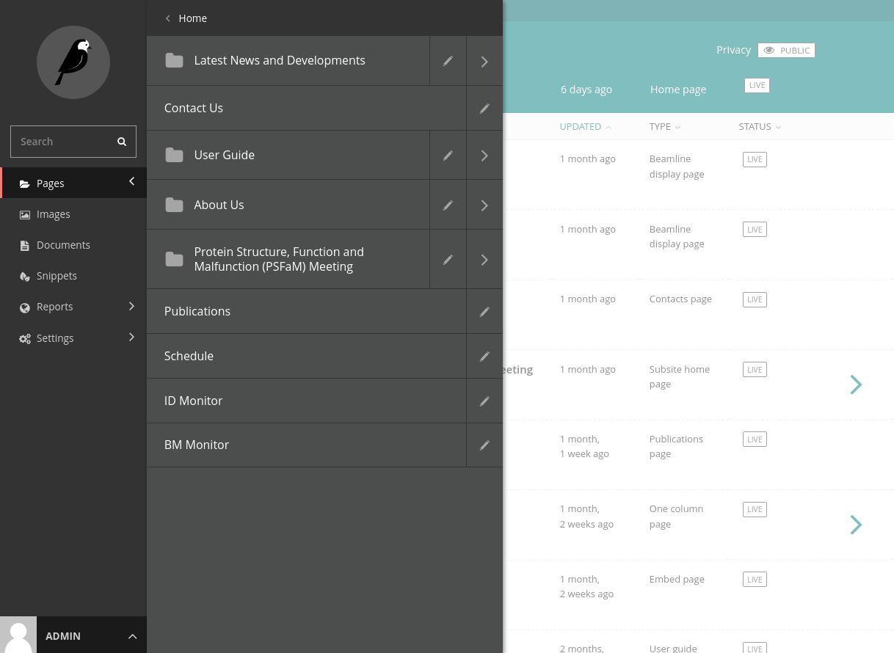
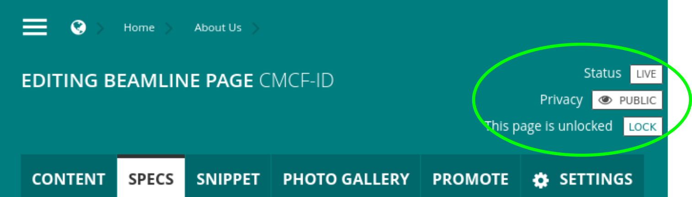

Pages¶
All content is added as a “page”. Navigate to the page you’d like to edit using the “Pages” entry in the main admin sidebar.
To add a new page, navigate to the desired parent page, and click “Add Child Page”. Enter your desired content, preview it if you like, and then either save a draft or publish the page using the toolbar at the bottom of the editing interface.
Hiding Pages¶
Each page has a “Privacy” button in the header at the top of the editing interface. To work on a page without making it available to the public, choose “Public, accessible to logged in users”. The page will only be visible to you while you are logged into the admin site.
Page Types¶
Home Page¶
The landing page for your website. There is typically only one homepage per site.
The slider on the top left-hand side is automatically populated with any Post Pages that have the “highlight” field checked.
The publications on the bottom left-hand side are automatically populated once you have a Publications Page set up.
Content added to different fields in the Home Page will populate different areas of the home page layout.
Beamline Page¶
This page is used for each individual beamline.
The content entered in the “Snippet”, along with the “Status” and “Status Color”, will be displayed on the right-hand side of the Home Page.
The main page content is displayed in this order: Name, Status, Description, Schematic, Specs
The sidebar content is displayed in this order: Photo Gallery (slider), Sidebar
Note
Note that you can add multiple galleries, but it works best to add multiple photos to a single gallery. Each gallery will be displayed as a separate “polaroid”-style photo. Be careful which “+” you click.
Contacts Page¶
There is typically only one contacts page per site, but you can add as many as you like.
For each person added under “Personnel”, you can add up to two images - one to be displayed all the time, and another to only show when the cursor is hovering over that person. If there is no hover image, the normal image is displayed on hover.
News Page¶
The main index page for all news items created as children of the page. For the most part, it only needs a title.
To create a new category for news items, from the main admin sidebar click “Snippets” >> “Categories” >> “Add Category”
To add a news item, go to the News Page, and click “Add Child Page”. The title and subtitle, along with the image (automatically cropped to a square), are displayed on the homepage for highlighted news items.
Publications Page¶
A page custom-tailored to display publications from the CLS USO.
In our case, the API should be https://user-portal.lightsource.ca/api/v1, and the acronym should be the same one referenced in the USO.
User Guide Page¶
User Guide pages should be organized with one main User Guide page with child User Guide pages created below it.
The sidebar menu is automatically built, displaying the icon and title of each child page that has “Show in menus” selected under “Promote”.
The “In this article…” box is populated with any “H2” headings from the body content of the page.
To choose an icon, find the code (starting with “ti-“) for the icon you want at https://themify.me/themify-icons.
One column Page¶
A standard page with one column for content.
Two column Page¶
A standard page with one column for content, and a grey sidebar.
Beamline Display Page¶
A page meant for a persistent display, like a hallway monitor or tablet. The top-left corner displays a sliding view of highlighted news items (like on the home page), with an editable top-right section and bottom photo gallery.
Embed Page¶
A special page type to include content from an external site in an iframe. CMCF uses an Embed Page to display our beamline schedule from MxLIVE.
The body content is displayed above the embedded content.
Subsite Home Page¶
Has many of the same functionality of a home page (setting header text, footer content), with the added ability to select custom header and footer colours. The page is displayed similar to a One column Page.
We are currently using this for the pseudo-hosting of the PSFaM website.
The main menu of a subsite page is automatically created with child pages of the Subsite Home Page.